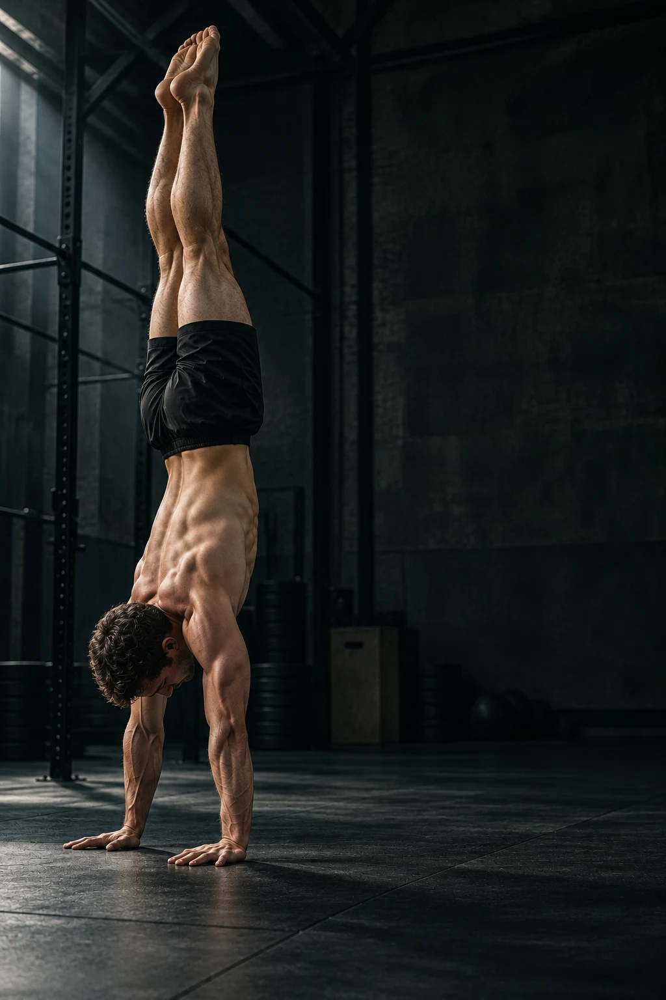

ניתוח תנועה
שמוביל אותך
לרמה הבאה.
העלו וידאו. קבלו ניתוח מדויק
של הטכניקה שלכם בעמידת ידיים.
עוד על הניתוח וההתקדמות שלכם
הביצוע האחרון שלך
איך מתחילים?
בחר סרטון
צילום מהצד שבו רואים את כל הגוף ואת הרצפה.
צפה בניתוח
סרטון, שכבת שלד וציון המבוסס על חלקי התנועה שזוהו.
נסה שוב
בחר נקודת שיפור אחת וחזור למדוד את הביצוע הבא.
תרגילים לניתוח
בפיתוח פלאנץ׳מתחהתרגילים הנוספים עדיין אינם זמינים לניתוח.
קרדיט לצילום
נכס AI מקורי שנוצר עבור MOVALYT. צילום הדגמה בלבד, ללא קשר לנתוני משתמש.היסטוריה
מדידות שנשמרו במכשיר הזה. סרטונים אינם נשמרים עם ההיסטוריה.
הניתוחים האחרונים
ניתוח ניסיון חדש ←אחרי רענון צריך לבחור את הסרטון שוב. המדידות השמורות עדיין זמינות בהיסטוריה.
מוכנים לנתח?
עמידת ידיים בלבדכך תצלמו בצורה הטובה ביותר
עמדו במרחק של 2–3 מטרים, כך שכל הגוף יופיע בתמונה. צלמו לאורך התרגיל.
עד שתי דקות · ליד קיר ובמרחב פנוי לפי הצורך.הסרטון נשאר במכשיר. בחירת קובץ מתחילה את הניתוח המקומי.
מנתח את התנועה שלך
- בדיקת הסרטון
- טעינת מודל התנועה
- זיהוי נקודות גוף
- ניתוח טכניקה
- יצירת המשוב
הניתוח מתבצע במכשיר שלך. משך העיבוד תלוי באורך הסרטון ובמכשיר.
כמה טוב היה הקו שלך לאורך הזמן. לחץ על הגרף כדי לקפוץ לרגע:
מקטע העמידה שנמדד
הסימון מציג הערכה של מנח הגוף. אם הזיהוי חלקי, כדאי לנסות צילום ברור יותר.
משוב מלא ותרגילים להמשך
מכאן לתרגול
תרגילים להמשך
תרגלו לצד קיר ובמרחב פנוי. אם מופיע כאב, הפסיקו את התרגיל.
משוב ענן מורחב
אינו זמין בגרסה זו. הניתוח והמשוב המקומי ממשיכים לעבוד.